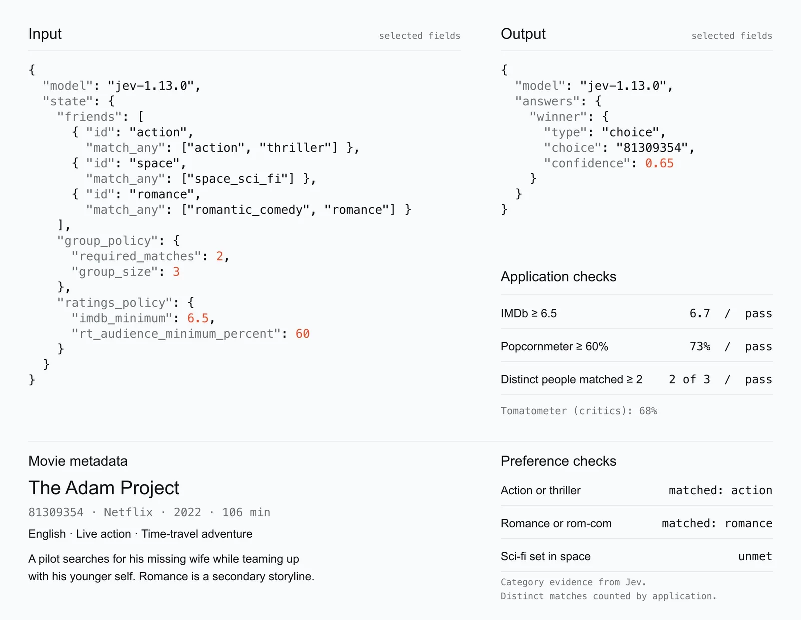

体験
1枚の画面の中で、確率を伴う判断と、決まった規則の検査が、別々の欄に分けて示されている。どこまでがJevの判断で、どこからがアプリの計算かを、注記が言葉で区切っている。
- 好みに合うかどうかは、あらすじの解釈を含むので、Jevに任せる。評価点の足切りと、人数の数え上げは、数字で決まるので、アプリが行う。間違え方の違う2種類の処理を混ぜていない。
- 満たされなかった好み（宇宙のSF）が、unmetとして残る。3人中2人の妥協であることが、結果から消えない。誰が譲ったかが見える。
- confidence 0.65は、そのまま表示されている。この値が何を意味するか、低いときにどうするかは、画像からは分からない。
- 作者は、1回目の失敗を投稿に書いている。ジャンルだけで選んだ結果、評価点の低い作品が選ばれた。そこで評価点の下限を規則に加え、候補を広げて、やり直した。判断の誤りではなく、条件の不足だったことを、規則の追加で直している。
- 候補を眺めて選び直す画面や、結果に異議を出す手段は、示されていない。
キャプチャ
{kind=link}

（原寸の画像を開く）見る箇所左上のInput（friends、group_policy、ratings_policy）、右上のOutput（type: choice、confidence 0.65）、Application checksの3行とpass、Preference checksのmatchedとunmet、右下の注記「Category evidence from Jev. Distinct matches counted by application.」
入力から画面の変化まで
-
判断への入力
3人の好み（action：アクションかスリラー、space：宇宙を舞台にしたSF、romance：ロマンスかロマンティックコメディ）、グループの規則（3人中2人の一致が必要）、評価点の規則（IMDb 6.5以上、Rotten Tomatoesの観客評価60%以上）、候補の映画の説明。モデルの表記は「jev-1.13.0」。
-
Jevの判断
出力の表示は、winnerという問いに対する
"type": "choice"、選ばれた作品のID、confidence 0.65。作者の説明では、Jevはジャンルとあらすじを根拠に、それぞれの好みに合うかを評価する。 -
結果がUIをどう変えるか
選ばれた作品（The Adam Project、2022年、106分）の情報。Application checksは、IMDb 6.7でpass、Popcornmeter 73%でpass、一致した人数が3人中2人でpass。Preference checksは、アクションに一致、ロマンスに一致、宇宙のSFはunmet。批評家の評価（Tomatometer 68%）は、規則と別に表示される。
- 判断型の見立て
- Choice出典に明記
- 画像の出力のJSONに "type": "choice" と書かれている。好みごとの評価をどの質問型で尋ねたかは、画像に出ていない。
Jevとの適合
あらすじと好みの組に対して、合うかどうかを評価し、候補から1つを選ぶ判断は、Jevの型に収まる。数字の規則をJevに任せず、アプリの側に置いた点が、この事例の設計上の要点である。ただし、判断の妥当性は、作者の1回の結果以上には確かめられていない。
確認範囲と未確認事項
根拠は限定的で、調査監査の評価はB（追加の確認が要る段階）。作者による投稿の画像1枚を確認。画像は結果をまとめた静的な1枚で、リポジトリも動くアプリも公開されていない。Netflixの画面を操作して候補を集めたという流れは、作者の説明であり、示されていない。作者自身が、小さな候補の一覧で試しただけで、評価はまだ足りないと述べている。
- 確認済み投稿の画像1枚に見える内容（入力のJSON、出力のchoiceとconfidence、Application checks、Preference checks、映画の情報、注記）。作者が投稿で、1回目の失敗と、規則を足したやり直しを述べていること
- 未検証Netflixの画面を操作して候補を集める流れ、候補の一覧と説明、好みごとの判断の値、confidenceの意味、判断の妥当性と再現性、動くアプリとソースコードの有無
- 推定扱いなし。質問型は、画像の出力に書かれた
"type": "choice"による。好みごとの評価をどの質問型で尋ねたかは、画像に出ていない - 引用投稿の画像を縮小して引用。権利は作者に帰属する